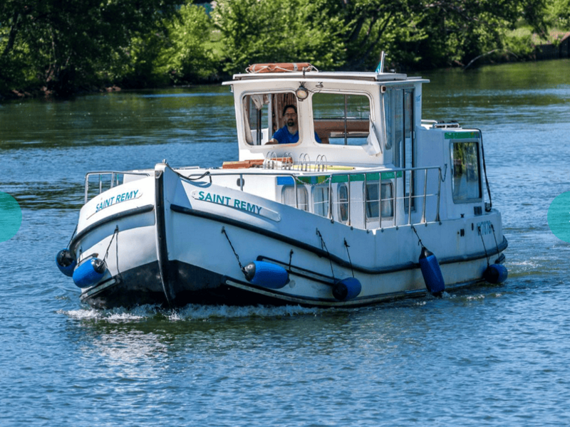
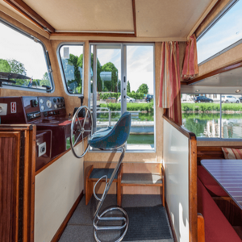
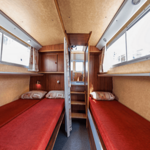
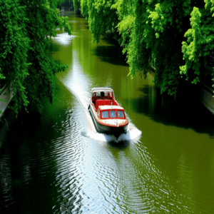
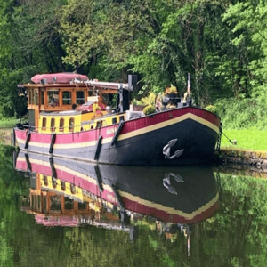

La Pénichette
La Pénichette est le bateau idéal pour découvrir les canaux et rivières de France en toute tranquillité. Ce bateau fluvial confortable et facile à manœuvrer vous permettra de vivre une expérience unique au fil de l'eau. Que vous soyez en famille ou entre amis, la Pénichette vous offre tout le confort nécessaire pour des vacances inoubliables.
Caractéristiques :
- Longueur : 11,80 mètres
- Largeur : 3,85 mètres
- Capacité : 6 à 8 personnes
- 3 cabines doubles
- 2 salles d'eau avec douche et WC
- Cuisine équipée
- Salon spacieux avec vue panoramique
- Terrasse extérieure
- Chauffage central
- Propulsion électrique écologique
- Wi-Fi à bord
- Équipement de navigation moderne




Exemple d'itinéraire : Le canal du Midi
Découvrez la beauté du Canal du Midi, classé au patrimoine mondial de l'UNESCO, à bord de votre Pénichette. Voici un aperçu d'un itinéraire de 7 jours :
- Jour 1 : Départ de Castelnaudary - Visite de la ville et de son grand bassin
- Jour 2 : Navigation vers Bram - Découverte du village circulaire
- Jour 3 : Carcassonne - Exploration de la cité médiévale
- Jour 4 : Trèbes - Dégustation de vins locaux
- Jour 5 : Homps - Balade le long du canal
- Jour 6 : Le Somail - Visite de la librairie flottante
- Jour 7 : Retour à Castelnaudary - Dégustation du fameux cassoulet